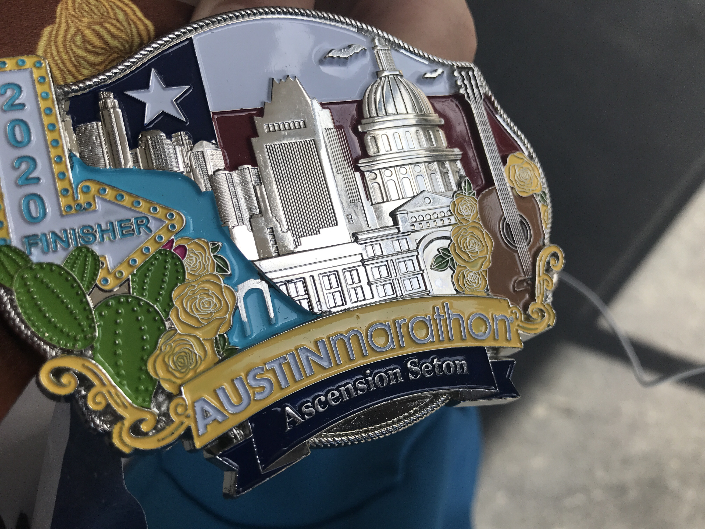

My Life
{ basic_info }
Hi, my preferred name is Lupin, and my legal name is Yuan. My last name is Cai.
I have my high school in Austin, TX. I ran a marathon when I was 17 years old. Besides that, I played
soccer in highest school.

{ education }
Currently, I have a GPA of 3.9 studying Applied mathematics & Computer Science at Emory University. I am fluent in Python, Java, and SQL.
I am very familiar with AWS EC2, git, flask, gradle, fast frame work, GPT plugin, Linux, and Nginx. I still need practice with C, CPP, CUDA, and javascript. I am not fluent in html and CSS.
Language wise, I speak both Chinese and English.
{ work_experience }
I worked as an intern for Triangle Accounting during the summer of 2023 helping them design and setting up a database that will be used for their branch in both China and the US.
I will be working as an intern for J.P.Morgan Chase during the summer of 2024 on AWS Cloud Enablement.
During the spring semester of 2024, I worked part time for Remotask helping training a coding-foucused large language model with a 95% accuracy.
GitHub
Linked In
PixIV(Yes, I am also a painter!)
{ out_side_of_school }
Besides running, I love bank fishing and cars. I used to have a 1970 Chevy Impala, but I had to sell the car because I have no time.

The Impala and Me.
I have to fix the car myself when it breaks down because no shops will take it and fix it in a short amount of time.
And so I have to change the oil, etc all by myself. The following pictures are the several times when it breaks down. And I successfully fixed the car without a garage.

The rear brake hose was broken, I took it off and replaced it with a new one.

The broken hose I took down

The left idle arm fell off, and I put it back on with a jack and 2 stands.

The muffler fell off and I place it back on, it was simple.

The rear-left shock went out because the retainer somehow went off.

Put it back in only with the help of a jack, 2 stands, 1 ranch, 2 spring compressor, and straps. I could not believe I made it.
Even though the car was troublesome, I still miss the car and cherish the time I have with the Impala.
Back to Main Page